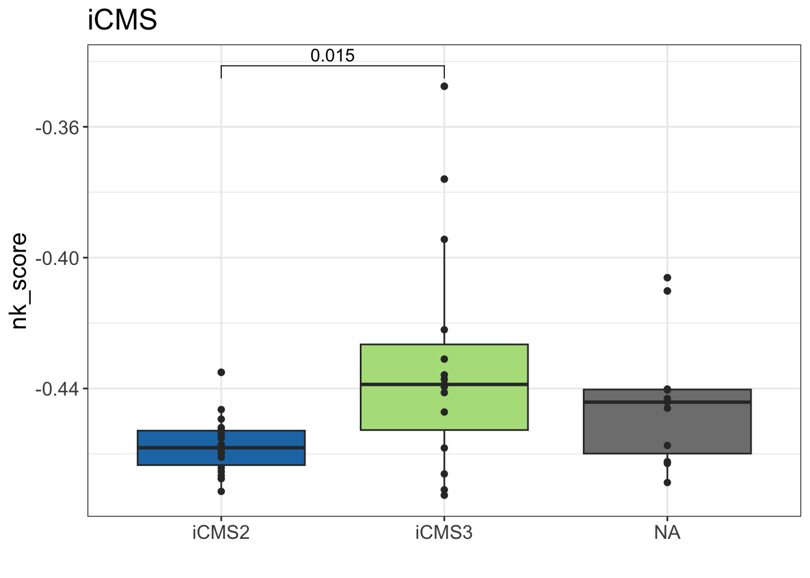

Last updated: 2023-08-23
Checks: 7 0
Knit directory: NK_CRLM/
This reproducible R Markdown analysis was created with workflowr (version 1.7.0). The Checks tab describes the reproducibility checks that were applied when the results were created. The Past versions tab lists the development history.
Great! Since the R Markdown file has been committed to the Git repository, you know the exact version of the code that produced these results.
Great job! The global environment was empty. Objects defined in the global environment can affect the analysis in your R Markdown file in unknown ways. For reproduciblity it’s best to always run the code in an empty environment.
The command set.seed(20230823) was run prior to running
the code in the R Markdown file. Setting a seed ensures that any results
that rely on randomness, e.g. subsampling or permutations, are
reproducible.
Great job! Recording the operating system, R version, and package versions is critical for reproducibility.
Nice! There were no cached chunks for this analysis, so you can be confident that you successfully produced the results during this run.
Great job! Using relative paths to the files within your workflowr project makes it easier to run your code on other machines.
Great! You are using Git for version control. Tracking code development and connecting the code version to the results is critical for reproducibility.
The results in this page were generated with repository version 107c71f. See the Past versions tab to see a history of the changes made to the R Markdown and HTML files.
Note that you need to be careful to ensure that all relevant files for
the analysis have been committed to Git prior to generating the results
(you can use wflow_publish or
wflow_git_commit). workflowr only checks the R Markdown
file, but you know if there are other scripts or data files that it
depends on. Below is the status of the Git repository when the results
were generated:
Ignored files:
Ignored: .DS_Store
Untracked files:
Untracked: data/20230822_Shembrey_NK_Signature.csv
Untracked: data/DGEList_3prime_Org_171samples_rm4Tum_9Untreated.RDS
Untracked: data/DGEList_Filtered_TCGA_COAD_ForCarolyn.RDS
Untracked: data/Genomics_WES_WGS_ProteinCoding_ImpactHighModerate_Canonicals_UniqueGenes.txt
Untracked: data/Hollande_DGEList_Tum_Raw.RDS
Untracked: data/iCMS_template.csv
Untracked: output/20230823_Shembrey_NK_Score_Hollande_CRLM.csv
Note that any generated files, e.g. HTML, png, CSS, etc., are not included in this status report because it is ok for generated content to have uncommitted changes.
These are the previous versions of the repository in which changes were
made to the R Markdown (analysis/CRLM_Subtyping.Rmd) and
HTML (docs/CRLM_Subtyping.html) files. If you’ve configured
a remote Git repository (see ?wflow_git_remote), click on
the hyperlinks in the table below to view the files as they were in that
past version.
| File | Version | Author | Date | Message |
|---|---|---|---|---|
| Rmd | 107c71f | Robin Wagner (UoM Laptop) | 2023-08-23 | Amended boxplot colors |
| html | 7d172e2 | Robin Wagner (UoM Laptop) | 2023-08-23 | Build site. |
| Rmd | afb3d73 | Robin Wagner (UoM Laptop) | 2023-08-23 | Silenced messages on CMScaller |
| html | 8988bff | Robin Wagner (UoM Laptop) | 2023-08-23 | Build site. |
| Rmd | f4b343d | Robin Wagner (UoM Laptop) | 2023-08-23 | Comitting my first-pass draft |
| html | d5a0814 | Robin Wagner (UoM Laptop) | 2023-08-23 | Build site. |
| Rmd | dcb7ccb | Robin Wagner (UoM Laptop) | 2023-08-23 | wflow_publish("analysis/CRLM_Subtyping.Rmd") |
In this code I will use nearest template prediction to classify the consensus molecular subtype (CMS) and intrinsic CMS of each CRLM sample using the CMScaller package.
library(dplyr)
library(CMScaller)
library(ggplot2)
library(RColorBrewer)Read in and prepare the raw counts data for the 58 samples.
expr <- readRDS("data/Hollande_DGEList_Tum_Raw.RDS"); dim(expr)Loading required package: edgeRLoading required package: limma[1] 25702 58Remove duplicated sample.
expr$samples <- expr$samples[-12,]
expr$counts <- expr$counts[,-12]
dim(expr$samples); dim(expr$counts)[1] 57 43[1] 25702 57all(colnames(expr$counts) == rownames(expr$samples))[1] TRUEFilter out primary tumours as these are irrelevant to our analysis.
expr$samples <- expr$samples %>% filter(!Tissue == "CoT"); summary (expr$samples$Tissue)CoT LT
0 44 expr$counts <- expr$counts[,rownames(expr$samples)]; dim(expr$counts)[1] 25702 44Filter out lowly-expressed genes.
keep <- filterByExpr(expr$counts)No group or design set. Assuming all samples belong to one group.expr_filt <- expr[keep, ]; dim(expr_filt)[1] 9888 44Normalise for library size.
expr_norm <- calcNormFactors(expr_filt, method = "TMM")Perform CMS classification using inbuilt template.
CMS <- CMScaller(emat = expr_norm$counts, RNAseq=TRUE, FDR=0.05); head(CMS)
| Version | Author | Date |
|---|---|---|
| 8988bff | Robin Wagner (UoM Laptop) | 2023-08-23 |
CMS1 CMS2 CMS3 CMS4 <NA>
4 4 3 19 14 prediction d.CMS1 d.CMS2 d.CMS3 d.CMS4 p.value
JV388_LT CMS3 0.6818851 0.6751093 0.6464738 0.8253085 0.02697303
KG078_LT <NA> 0.7375867 0.6906808 0.7137610 0.8315222 0.89410589
PCC002_LT1a <NA> 0.8140515 0.6483671 0.7308334 0.7996499 0.03596404
PCC002_LT1b CMS4 0.7209306 0.6957662 0.7393632 0.5656365 0.00100000
PDO032_LT CMS4 0.5960818 0.7169246 0.6856722 0.5786111 0.00100000
PDW486_LT CMS4 0.6053514 0.7252045 0.6907481 0.5934999 0.00100000
FDR
JV388_LT 0.039560440
KG078_LT 0.972144135
PCC002_LT1a 0.051045728
PCC002_LT1b 0.001692308
PDO032_LT 0.001692308
PDW486_LT 0.001692308summary(CMS$prediction)CMS1 CMS2 CMS3 CMS4 NA's
4 4 3 19 14 Create templates for iCMS. Here genes up in iCMS2 and down iCMS3 are designated iCMS2 genes. The reverse is true for iCMS3.
iCMS_template <- read.csv("data/iCMS_template.csv"); head(iCMS_template) symbol class
1 CXCL14 iCMS2
2 LY6G6F-LY6G6D iCMS2
3 EREG iCMS2
4 TIMP3 iCMS2
5 KRT23 iCMS2
6 RUBCNL iCMS2iCMS_template$probe <- fromTo(key = iCMS_template$symbol, id.in = "symbol", id.out = "entrez")no corresponding entrez for symbol key(s) LY6G6F-LY6G6D; RAB5IF; RTF2; ATP5F1E; SINHCAF; AC004130.1; SMIM26; RETREG1; AL445524.1; DEPP1; AC020656.1; ATP5F1A; TENT5A; AP001816.1; DGLUCY; AC005833.1; SMIM31Warning: 17 identifiers not translated, NA's returnedClassify according to iCMS.
iCMS <- CMScaller(expr_norm$counts, templates = iCMS_template, RNAseq = T, FDR = 0.05); head(iCMS)
| Version | Author | Date |
|---|---|---|
| 8988bff | Robin Wagner (UoM Laptop) | 2023-08-23 |
iCMS2 iCMS3 <NA>
18 15 11 prediction d.iCMS2 d.iCMS3 p.value FDR
JV388_LT <NA> 0.6857759 0.7278128 0.150849151 0.1843712
KG078_LT <NA> 0.6904140 0.7234145 0.281718282 0.3178360
PCC002_LT1a iCMS2 0.5960954 0.8029136 0.001000000 0.0017600
PCC002_LT1b iCMS2 0.6611603 0.7502447 0.005994006 0.0101437
PDO032_LT <NA> 0.7040763 0.7101243 0.856143856 0.8760542
PDW486_LT iCMS3 0.7684975 0.6398528 0.001000000 0.0017600summary(iCMS$prediction)iCMS2 iCMS3 NA's
18 15 11 Load NK score data.
nk_score <- read.csv("output/20230823_Shembrey_NK_Score_Hollande_CRLM.csv", row.names = 1); head(nk_score) sample score quartile designation
1 JV388_LT -0.4628994 1 low
2 KG078_LT -0.4401634 3 intermediate
3 PCC002_LT1a -0.4714542 1 low
4 PCC002_LT1b -0.4519359 3 intermediate
5 PDO032_LT -0.4574141 2 intermediate
6 PDW486_LT -0.4471963 3 intermediateVisualise the association between subtypes and NK score.
plot_data <- data.frame(sample = colnames(expr_norm$counts),
CMS = CMS$prediction,
iCMS = iCMS$prediction,
nk_score = nk_score$score) %>%
tidyr::gather(key = system,
value = subtype,
c("CMS", "iCMS")); head(plot_data)Warning: attributes are not identical across measure variables; they will be
dropped sample nk_score system subtype
1 JV388_LT -0.4628994 CMS CMS3
2 KG078_LT -0.4401634 CMS <NA>
3 PCC002_LT1a -0.4714542 CMS <NA>
4 PCC002_LT1b -0.4519359 CMS CMS4
5 PDO032_LT -0.4574141 CMS CMS4
6 PDW486_LT -0.4471963 CMS CMS4ggplot(plot_data, aes(x = subtype, y = nk_score, fill = subtype)) +
geom_boxplot() +
geom_point(position = position_dodge(0.9), color = "gray20") +
facet_wrap(~system, scales = "free_x") +
theme_bw() +
theme(text = element_text(size = 15)) +
scale_fill_manual(values = brewer.pal(8, "Paired"))
| Version | Author | Date |
|---|---|---|
| 8988bff | Robin Wagner (UoM Laptop) | 2023-08-23 |
sessionInfo()R version 4.3.1 (2023-06-16)
Platform: aarch64-apple-darwin20 (64-bit)
Running under: macOS Ventura 13.3
Matrix products: default
BLAS: /Library/Frameworks/R.framework/Versions/4.3-arm64/Resources/lib/libRblas.0.dylib
LAPACK: /Library/Frameworks/R.framework/Versions/4.3-arm64/Resources/lib/libRlapack.dylib; LAPACK version 3.11.0
locale:
[1] en_US.UTF-8/en_US.UTF-8/en_US.UTF-8/C/en_US.UTF-8/en_US.UTF-8
time zone: Australia/Melbourne
tzcode source: internal
attached base packages:
[1] stats graphics grDevices utils datasets methods base
other attached packages:
[1] edgeR_3.42.4 limma_3.56.2 RColorBrewer_1.1-3 ggplot2_3.4.3
[5] CMScaller_0.99.2 dplyr_1.1.2 workflowr_1.7.0
loaded via a namespace (and not attached):
[1] tidyr_1.3.0 sass_0.4.7 utf8_1.2.3 generics_0.1.3
[5] lattice_0.21-8 stringi_1.7.12 digest_0.6.33 magrittr_2.0.3
[9] evaluate_0.21 grid_4.3.1 fastmap_1.1.1 rprojroot_2.0.3
[13] jsonlite_1.8.7 processx_3.8.2 whisker_0.4.1 ps_1.7.5
[17] promises_1.2.1 httr_1.4.7 purrr_1.0.2 fansi_1.0.4
[21] scales_1.2.1 jquerylib_0.1.4 cli_3.6.1 rlang_1.1.1
[25] munsell_0.5.0 withr_2.5.0 cachem_1.0.8 yaml_2.3.7
[29] tools_4.3.1 colorspace_2.1-0 locfit_1.5-9.8 httpuv_1.6.11
[33] vctrs_0.6.3 R6_2.5.1 lifecycle_1.0.3 git2r_0.32.0
[37] stringr_1.5.0 fs_1.6.3 pkgconfig_2.0.3 callr_3.7.3
[41] pillar_1.9.0 bslib_0.5.1 later_1.3.1 gtable_0.3.3
[45] glue_1.6.2 Rcpp_1.0.11 highr_0.10 xfun_0.40
[49] tibble_3.2.1 tidyselect_1.2.0 rstudioapi_0.15.0 knitr_1.43
[53] farver_2.1.1 htmltools_0.5.6 labeling_0.4.2 rmarkdown_2.24
[57] compiler_4.3.1 getPass_0.2-2